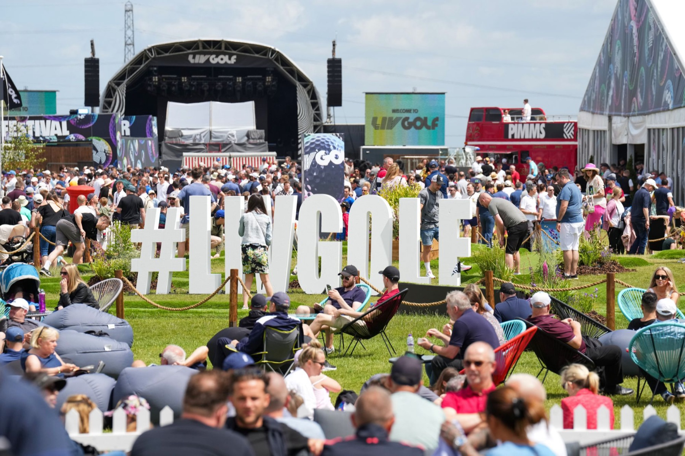
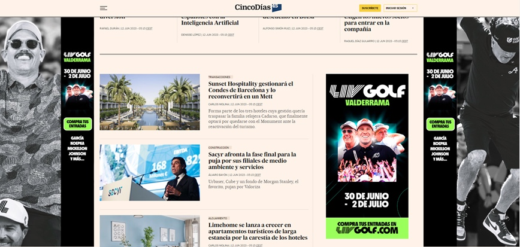
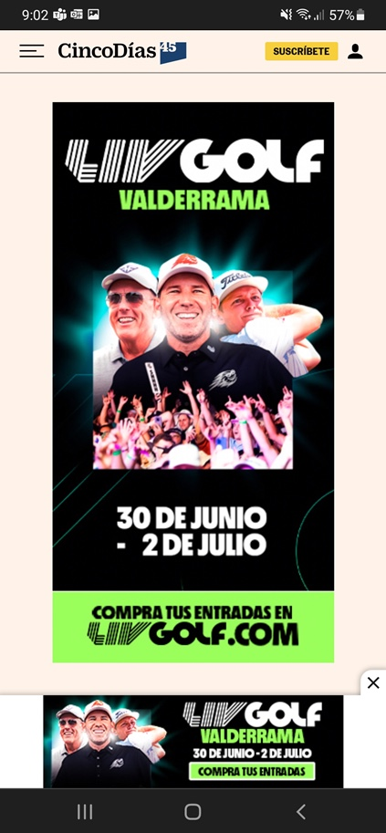
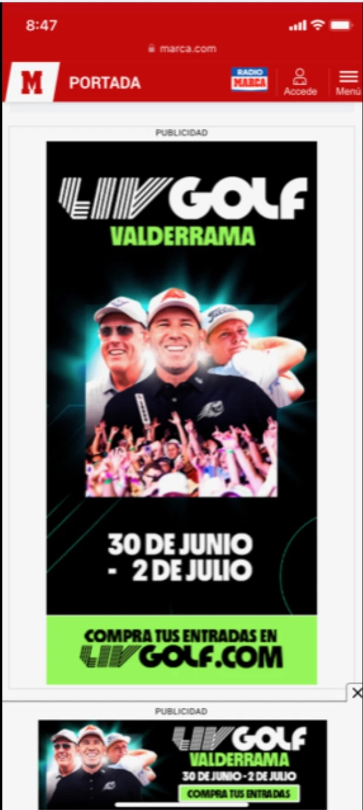
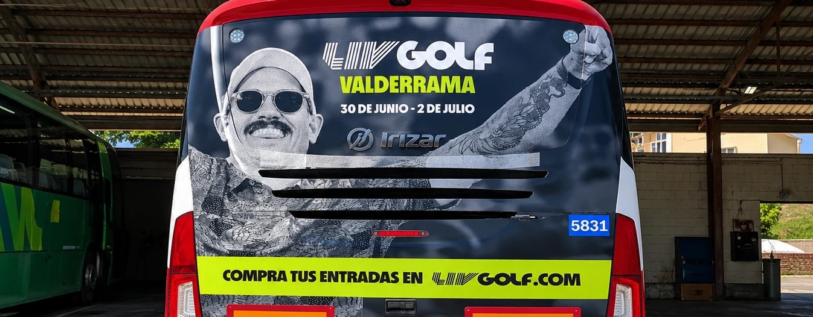
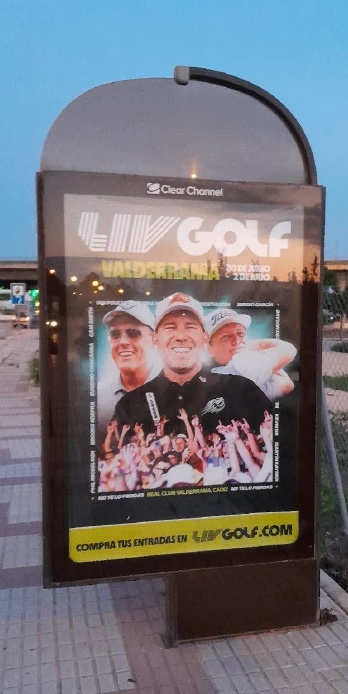
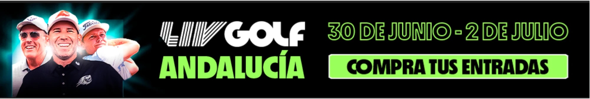

LIV Golf Valderrama
La llegada de LIV Golf a España, en el Real Club Valderrama (Cádiz). Más de 200 adaptaciones de una misma campaña: de los banners a las vallas, los mupis y hasta un velero rotulado.

El trabajo
LIV Golf Andalucía fue el primer evento del circuito en España y se celebró en el Real Club Valderrama del 30 de junio al 2 de julio. Me encargué de todas las adaptaciones de marca del evento, en coordinación con el equipo de diseño americano: más de 200 adaptaciones de campaña, entre banners y el resto de soportes.
El reto estaba en la escala: un mismo concepto tenía que funcionar igual de bien en publicidad online y offline: prensa, vallas, mupis y marquesinas, y también en vehículos, autobuses y hasta un velero, que vinilamos con la campaña. Todo respetando siempre las reglas de la marca y los tiempos de cada medio.
Presencia en: Marca, AS, ABC de Sevilla, Diario de Sevilla, SUR in English, Málaga Hoy, Europa Sur, Andalucía Golf España, SG Plus y El Periódico de Sotogrande.





